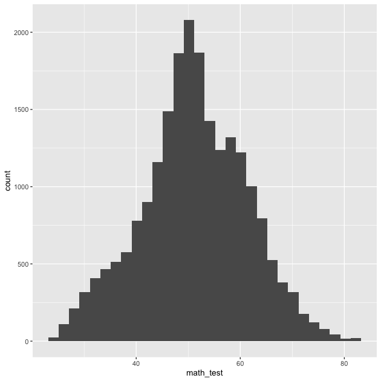
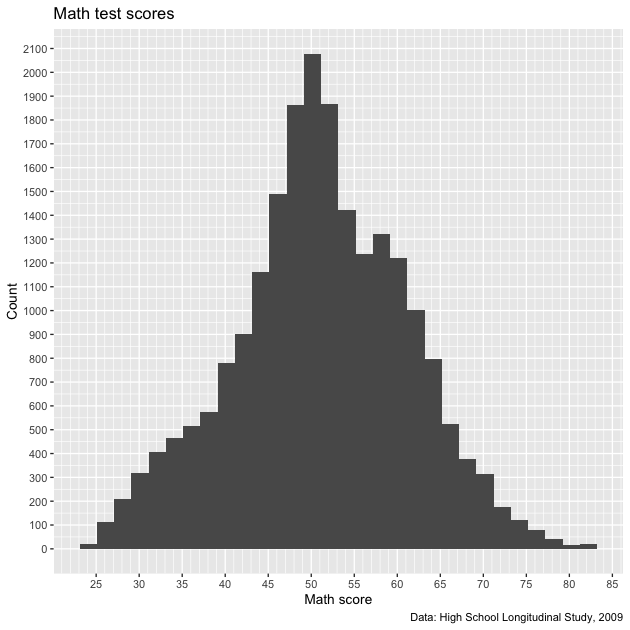
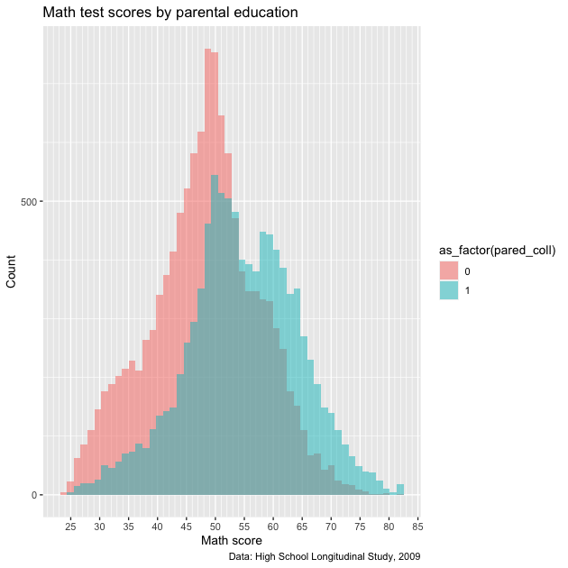
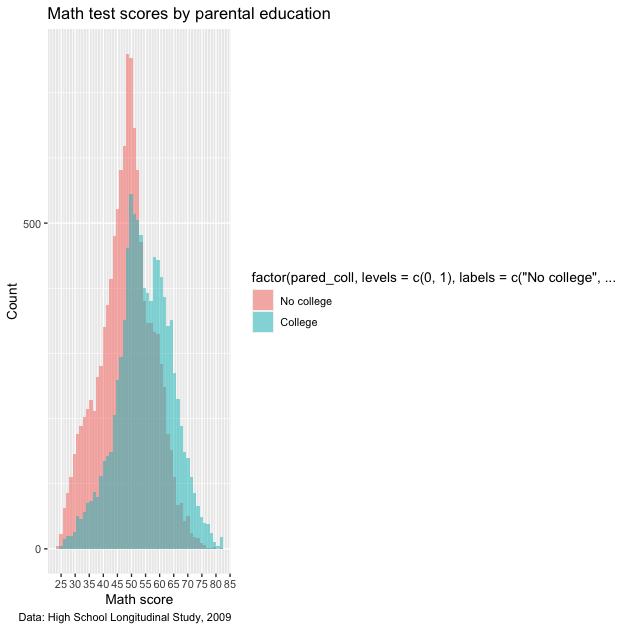
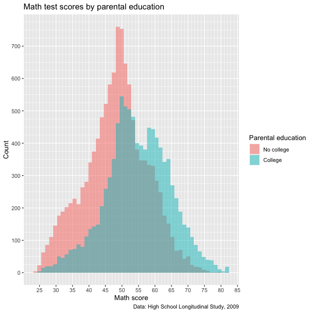
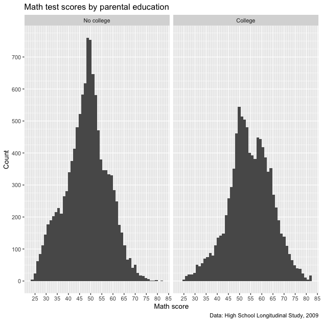
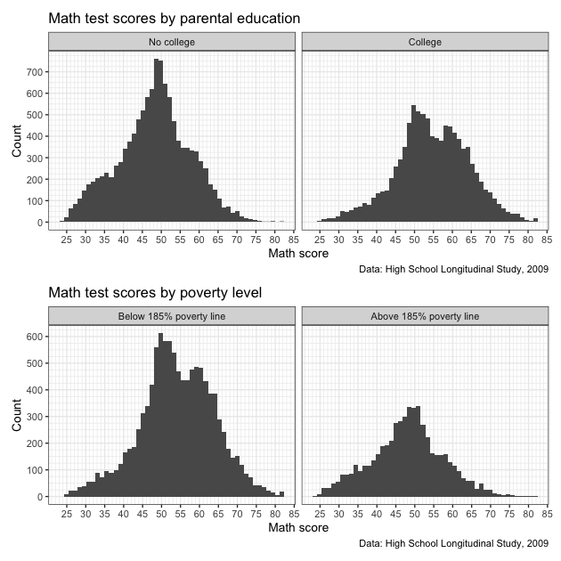
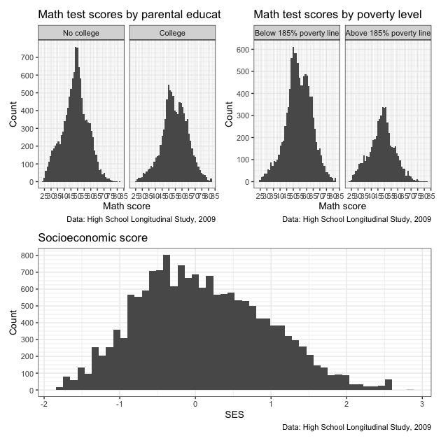

EDH 7916: Contemporary Research in Higher Education
Spring 2023
A course in quantitative research workflow for students in the higher education administration program at the University of Florida
Overview Course information Meeting location Software Schedule Lessons Assignments Questions Past courses About
Data Visualization with ggplot2: Part II
Well-constructed figures can make a huge difference in how your work is received. First, they look nice! But more importantly, a well-constructed figure, just like a well-constructed sentence, can more accurately and more succinctly convey key information to the reader. We’ve already learned the basics of plotting in the first data visualization lesson, but we didn’t spend much time making our figures look as nice as we could have. The sky is limit with graphics in R, but with just a little bit of extra effort, you can make very nice figures.
That’s what we’re doing in this lesson.
Libraries, functions, and paths
In addition to tidyverse, we’ll add a new library,
patchwork, that we’ll use
toward the end of the lesson. If you haven’t already downloaded it, be
sure to install it first using install.packages("patchwork").
## ---------------------------
## libraries
## ---------------------------
library(tidyverse)
## ── Attaching packages ─────────────────────────────────────── tidyverse 1.3.2 ──
## ✔ ggplot2 3.4.0 ✔ purrr 1.0.1
## ✔ tibble 3.1.8 ✔ dplyr 1.1.0
## ✔ tidyr 1.3.0 ✔ stringr 1.5.0
## ✔ readr 2.1.3 ✔ forcats 1.0.0
## ── Conflicts ────────────────────────────────────────── tidyverse_conflicts() ──
## ✖ dplyr::filter() masks stats::filter()
## ✖ dplyr::lag() masks stats::lag()
library(patchwork)
We’ll need to convert and then replace some missing values in the
lesson, so we’ll include our user-written function, fix_missing(),
that we first used in the programming
lesson.
## ---------------------------
## functions
## ---------------------------
## utility function to convert values to NA
fix_missing <- function(x, miss_val) {
x <- ifelse(x %in% miss_val, NA, x)
return(x)
}
Our data directory path will be the same as we’ve used throughout the course.
## ---------------------------
## directory paths
## ---------------------------
## assume we're running this script from the ./scripts subdirectory
dat_dir <- file.path("..", "data")
Finally, we’ll load the data file we’ll be using,
hsls_small.csv. Since we already know about the structure of
hsls_small.csv, we’ll use the read_csv() argument show_col_types
= FALSE to prevent all the extra console output when we read in the
data file.
## ---------------------------
## input data
## ---------------------------
## assume we're running this script from the ./scripts subdirectory
df <- read_csv(file.path(dat_dir, "hsls_small.csv"), show_col_types = FALSE)
Initial plot with no formatting
Rather than make a variety of plots, we’ll focus on making and
incrementally improving a single figure (with some slight variations
along the way). In general, we’ll be looking at math test scores via
the x1txtmscor data column.
Let’s start with the most basic histogram we can make. But first, we
need to fix our variable of interest. As you may recall from an
earlier lesson, x1txmtscor is a normed variable with a mean of 50
and standard deviation of 10. That means the negative values need to
be converted to NA values and, for our plotting purposes, dropped.
## -----------------------------------------------------------------------------
## initial plain plot
## -----------------------------------------------------------------------------
## fix missing values for text score and then drop missing
df <- df %>%
mutate(math_test = fix_missing(x1txmtscor, -8)) %>%
drop_na(math_test)
Now we can make our histogram with no extra settings:
## create histogram using ggplot
p <- ggplot(data = df,
mapping = aes(x = math_test)) +
geom_histogram()
## show
p
## `stat_bin()` using `bins = 30`. Pick better value with `binwidth`.

So there it is. Let’s make it better.
Titles and captions
The easiest things to improve on a figure are the title, subtitle,
axis labels, and caption. As with a lot of ggplot2 commands, there are
a few different ways to set these labels, but the most straightforward
way is to use the labs() function as part of the ggplot()
chain. Notice that we’ve added it to the end. (Also notice that we’ve
set the bins = 30 argument within geom_histogram(), which is the
default and will prevent a message from popping up each time.)
## -----------------------------------------------------------------------------
## titles and captions
## -----------------------------------------------------------------------------
## create histogram using ggplot, showing placeholder titles/labels/captions
p <- ggplot(data = df,
mapping = aes(x = math_test)) +
geom_histogram(bins = 30) +
labs(title = "Title",
subtitle = "Subtitle",
caption = "Caption",
x = "X axis label",
y = "Y axis label")
## show
p

Rather than accurately labeling the figure, I’ve repeated the arguments in strings so that it’s clearer where every piece goes. The title is of course on top, with the subtitle in a smaller font just below. The x and y axis labels go with their respective axes and the caption is right-aligned below the figure. You don’t have to use all of these options for every figure. If you don’t want to use one, you have a couple of options:
- If the argument would otherwise be blank (title, subtitle, and
caption), you can just leave the argument out of
labs() - If the argument will be filled, as is the case on the axes (ggplot
will use the variable name by default), you can use
NULL
To make our figure nicer, we’ll add a title, axis labels, and caption describing the data source. We don’t really need a subtitle and since there’s no default value, we’ll just leave it out.
## ---------------------------
## titles and captions: ver 2
## ---------------------------
## create histogram using ggplot
p <- ggplot(data = df,
mapping = aes(x = math_test)) +
geom_histogram(bins = 30) +
labs(title = "Math test scores",
caption = "Data: High School Longitudinal Study, 2009",
x = "Math score",
y = "Count")
## show
p

That looks better. Now we’ll move to improving the axis scales.
Axis formatting
In general, the default tick mark spacing and accompanying labels are pretty good. But sometimes we want to change them, sometimes to have fewer ticks and sometimes to have more. For this figure, we could use more ticks on the x axis to make differences in math test score clearer. While we’re at, we’ll increase the number of tick marks on the y axis too.
To change these values, we need to use scale_< aesthetic >_<
distribution > function. These may seem strange at first, but they
follow a logic. Specifically:
< aesthetic >: x, y, fill, colour, etc (what is being changed?)< distribution >: is the underlying variable continuous, discrete, or do you want to make a manual change?
To change our x and y tick marks we use:
scale_x_continuous()scale_y_continuous()
We use x and y because those are the aesthetics being adjusted and
we use continuous in both cases because math_test on the x axis
and the histogram counts on the y axis are both continuous
variables.
There are a number of options within the scale_*() family of
functions — and they can change depending on which scale_*()
function you use — but we’ll focus on using two:
breaks: where the major lines are going (they get numbers on the axis)minor_breaks: where the minor lines are going (they don’t get numbers on the axis)
Both breaks and minor_breaks take a vector of numbers. We can put
each number in manually using c() (e.g., c(0, 10, 20, 30, 40)),
but a better way is to use R’s seq() function: seq(start, end,
by). Notice that within each scale_*() function, we use the same
start and stop arguments for each seq(). We only change the by
argument. This will give us axis numbers at spaced intervals with
thinner, unnumbered lines between.
## -----------------------------------------------------------------------------
## axis formatting
## -----------------------------------------------------------------------------
## create histogram using ggplot
p <- ggplot(data = df,
mapping = aes(x = math_test)) +
geom_histogram(bins = 30) +
scale_x_continuous(breaks = seq(from = 0, to = 100, by = 5),
minor_breaks = seq(from = 0, to = 100, by = 1)) +
scale_y_continuous(breaks = seq(from = 0, to = 2500, by = 100),
minor_breaks = seq(from = 0, to = 2500, by = 50)) +
labs(title = "Math test scores",
caption = "Data: High School Longitudinal Study, 2009",
x = "Math score",
y = "Count")
## show
p

We certainly have more lines now. Maybe too many on the y axis,
which is a sort of low-information axis (do we need really that much
detail for histogram counts?). Let’s keep what we have for the x
axis and increase the by values of the y axis.
## ---------------------------
## axis formatting: ver 2
## ---------------------------
## create histogram using ggplot
p <- ggplot(data = df,
mapping = aes(x = math_test)) +
geom_histogram(bins = 30) +
scale_x_continuous(breaks = seq(from = 0, to = 100, by = 5),
minor_breaks = seq(from = 0, to = 100, by = 1)) +
scale_y_continuous(breaks = seq(from = 0, to = 2500, by = 500),
minor_breaks = seq(from = 0, to = 2500, by = 100)) +
labs(title = "Math test scores",
caption = "Data: High School Longitudinal Study, 2009",
x = "Math score",
y = "Count")
## show
p

That seems like a better balance. We’ll stick with that and move on to legend labels.
Legend labels
Let’s make our histogram a little more complex by separating math
scores by parental education. Specifically, we’ll use a binary
variable that represents, did either parent attend college? First,
we need to create a new variable, pared_coll, from the ordinal
variable, x1paredu. You can check the discussion of why we create
the variable this way from the first plotting
lesson.
## -----------------------------------------------------------------------------
## legend labels
## -----------------------------------------------------------------------------
## add indicator that == 1 if either parent has any college
df <- df %>%
mutate(pared_coll = ifelse(x1paredu >= 3, 1, 0))
Now we’ll make our same histogram, but add the fill aesthetic. As
we’ve done in the past, we’ll wrap our new binary variable in
as_factor() so ggplot understands that 0/1 are discrete
values. We’ll also modify geom_histogram() to use smaller bins, a
new "identity" position, and make the fill colors semi-transparent
with alpha.
## create histogram using ggplot
p <- ggplot(data = df,
mapping = aes(x = math_test, fill = as_factor(pared_coll))) +
geom_histogram(bins = 50, alpha = 0.5, position = "identity") +
scale_x_continuous(breaks = seq(from = 0, to = 100, by = 5),
minor_breaks = seq(from = 0, to = 100, by = 1)) +
scale_y_continuous(breaks = seq(from = 0, to = 2500, by = 500),
minor_breaks = seq(from = 0, to = 2500, by = 100)) +
labs(title = "Math test scores by parental education",
caption = "Data: High School Longitudinal Study, 2009",
x = "Math score",
y = "Count")
## show
p

Except for our labels and tick mark adjustments, this looks similar to what we’ve made before. The problem with this figure is two-fold:
- The legend title is not very nice — it’s just the variable name
wrapped in the
as_factor()function - The legend itself isn’t very informative: what do 0 and 1 mean?
To fix this, we’ll switch from using as_factor() to factor(),
which has more options. We’ll add the following function to aes() in
the initial ggplot() function:
fill = factor(pared_coll,
levels = c(0,1),
labels = c("No college","College"))
With factor(), we first say which variable should be converted to a
factor, pared_coll. Next, we manually set the levels of the
factor. That’s easy here because we only have two levels, 0 and 1,
which we can set using levels = c(0,1). Finally, we can add labels
to the levels. The main thing to make sure of is that the order of
our labels match the order of the levels. Since
0 :=no parental college1 :=at least one parent went to college
we use labels = c("No college","College") which match the c(0,1)
order in levels. Other than that, everything else is the same.
NOTE: we could have made pared_coll a factor when we initially
created it. In general, that is easier if we want the variable to
always be a factor and we’re making a large number of figures. But for
our purposes at the moment, we just convert it on the fly inside
ggplot.
## ---------------------------
## legend labels: ver 2
## ---------------------------
## create histogram using ggplot
p <- ggplot(data = df,
mapping = aes(x = math_test,
fill = factor(pared_coll,
levels = c(0,1),
labels = c("No college",
"College")))) +
geom_histogram(bins = 50, alpha = 0.5, position = "identity") +
scale_x_continuous(breaks = seq(from = 0, to = 100, by = 5),
minor_breaks = seq(from = 0, to = 100, by = 1)) +
scale_y_continuous(breaks = seq(from = 0, to = 2500, by = 500),
minor_breaks = seq(from = 0, to = 2500, by = 100)) +
labs(title = "Math test scores by parental education",
caption = "Data: High School Longitudinal Study, 2009",
x = "Math score",
y = "Count")
## show
p

Closer, but not quite! The 0/1 have been given proper labels, but the legend
title is even worse! Not only is it not nice to look at it, it’s now
so long that it squishes our plot. What we need to add is a
scale_*() function to fix it. Since we’re working with fill and a
discrete variable (remember: the factor only takes on countable
values, two in this case), then we’ll use scale_fill_discrete(). We
don’t really need to do anything other than give the legend that goes
with the fill aesthetic a name, so that’s the argument we use:
name.
Let’s add that to the chain just below our other scale_*()
functions before labs().
## ---------------------------
## legend labels: ver 3
## ---------------------------
## create histogram using ggplot
p <- ggplot(data = df,
mapping = aes(x = math_test,
fill = factor(pared_coll,
levels = c(0,1),
labels = c("No college",
"College")))) +
geom_histogram(bins = 50, alpha = 0.5, position = "identity") +
scale_x_continuous(breaks = seq(from = 0, to = 100, by = 5),
minor_breaks = seq(from = 0, to = 100, by = 1)) +
scale_y_continuous(breaks = seq(from = 0, to = 1500, by = 100),
minor_breaks = seq(from = 0, to = 1500, by = 25)) +
scale_fill_discrete(name = "Parental education") +
labs(title = "Math test scores by parental education",
caption = "Data: High School Longitudinal Study, 2009",
x = "Math score",
y = "Count")
## show
p

Much better!
Facet labels
Now that we’ve done the hard work of setting a factor, we can use the
same bit of code to more properly label facets. Instead of splitting
the test score histogram by color within the same plot area like we do
above, let’s say we use facet_wrap() instead. This will give us
discrete plot areas for each value of pared_coll.
To convert to a facetted figure, we’ll just move the factor(...)
information from fill to facet_wrap(). Since we don’t have color
changes based on fill, we can remove alpha and position from
geom_histogram().
## -----------------------------------------------------------------------------
## facet labels
## -----------------------------------------------------------------------------
## create histogram using ggplot
p <- ggplot(data = df,
mapping = aes(x = math_test)) +
facet_wrap(~ factor(pared_coll,
levels = c(0,1),
labels = c("No college","College"))) +
geom_histogram(bins = 50) +
scale_x_continuous(breaks = seq(from = 0, to = 100, by = 5),
minor_breaks = seq(from = 0, to = 100, by = 1)) +
scale_y_continuous(breaks = seq(from = 0, to = 1500, by = 100),
minor_breaks = seq(from = 0, to = 1500, by = 25)) +
labs(title = "Math test scores by parental education",
caption = "Data: High School Longitudinal Study, 2009",
x = "Math score",
y = "Count")
## show
p

Notice how each facet has a proper label. Easy enough! Note that there
is another way to fix facet labels using the labeller()
function, but
setting the labels using factor() will work for most situations.
Themes
Now that we’ve largely set our various labels, we can adjust the
overall look of the figure. If you did the mapping
lesson you may have noticed the we
called theme_void() on all of our maps, which completely removed all
the plotting structure: titles, labels, ticks, axes, etc. That’s the
extreme end of adjusting the theme!
Let’s start with simply removing the gray area of the figure. To do
this, we use the theme() function at the end of our ggplot
chain. Specifically, we’ll call the argument panel.background and
remove it using element_blank().
## -----------------------------------------------------------------------------
## themes
## -----------------------------------------------------------------------------
## create histogram using ggplot
p <- ggplot(data = df,
mapping = aes(x = math_test)) +
facet_wrap(~ factor(pared_coll,
levels = c(0,1),
labels = c("No college","College"))) +
geom_histogram(bins = 50) +
scale_x_continuous(breaks = seq(from = 0, to = 100, by = 5),
minor_breaks = seq(from = 0, to = 100, by = 1)) +
scale_y_continuous(breaks = seq(from = 0, to = 1500, by = 100),
minor_breaks = seq(from = 0, to = 1500, by = 25)) +
labs(title = "Math test scores by parental education",
caption = "Data: High School Longitudinal Study, 2009",
x = "Math score",
y = "Count") +
theme(panel.background = element_blank())
## show
p

So we removed the panel, but since our grid lines were white to offset
the gray, we don’t have grid lines any more. These would be
helpful! We can add them back in, but make them gray using
panel.grid.major and panel.grid.minor (notice the similar
construction of the names) and setting them with element_line(colour
= "gray").
## ---------------------------
## themes: ver 2
## ---------------------------
## create histogram using ggplot
p <- ggplot(data = df,
mapping = aes(x = math_test)) +
facet_wrap(~ factor(pared_coll,
levels = c(0,1),
labels = c("No college","College"))) +
geom_histogram(bins = 50) +
scale_x_continuous(breaks = seq(from = 0, to = 100, by = 5),
minor_breaks = seq(from = 0, to = 100, by = 1)) +
scale_y_continuous(breaks = seq(from = 0, to = 1500, by = 100),
minor_breaks = seq(from = 0, to = 1500, by = 25)) +
labs(title = "Math test scores by parental education",
caption = "Data: High School Longitudinal Study, 2009",
x = "Math score",
y = "Count") +
theme(panel.background = element_blank(),
panel.grid.major = element_line(colour = "gray"),
panel.grid.minor = element_line(colour = "gray"))
## show
p

That returned our lines, but let’s say that we don’t really care about
the horizontal lines. Rather than have the reader focus on counts, we
really just want them to focus on the distribution around the math
score. If we want to adjust the panel grids one axis at a time, we use
the same stub and add *.x and *.y as necessary. Notice how for the
x panel grids we use the old code, but for the y panel grids,
return to using element_blank().
## ---------------------------
## themes: ver 3
## ---------------------------
## create histogram using ggplot
p <- ggplot(data = df,
mapping = aes(x = math_test)) +
facet_wrap(~ factor(pared_coll,
levels = c(0,1),
labels = c("No college","College"))) +
geom_histogram(bins = 50) +
scale_x_continuous(breaks = seq(from = 0, to = 100, by = 5),
minor_breaks = seq(from = 0, to = 100, by = 1)) +
scale_y_continuous(breaks = seq(from = 0, to = 1500, by = 100),
minor_breaks = seq(from = 0, to = 1500, by = 25)) +
labs(title = "Math test scores by parental education",
caption = "Data: High School Longitudinal Study, 2009",
x = "Math score",
y = "Count") +
theme(panel.background = element_blank(),
panel.grid.major.x = element_line(colour = "grey"),
panel.grid.minor.x = element_line(colour = "grey"),
panel.grid.major.y = element_blank(),
panel.grid.minor.y = element_blank())
## show
p

Great! Now we only have vertical grid lines. Of course, we don’t
really need the y axis ticks and labels now. We can ditch them by
setting axis.title.y, axis.text.y, and axis.ticks.y to
element_blank(). Notice that since we call this after labs(), our
label for y is ignored.
## ---------------------------
## themes: ver 4
## ---------------------------
## create histogram using ggplot
p <- ggplot(data = df,
mapping = aes(x = math_test)) +
facet_wrap(~ factor(pared_coll,
levels = c(0,1),
labels = c("No college","College"))) +
geom_histogram(bins = 50) +
scale_x_continuous(breaks = seq(from = 0, to = 100, by = 5),
minor_breaks = seq(from = 0, to = 100, by = 1)) +
scale_y_continuous(breaks = seq(from = 0, to = 1500, by = 100),
minor_breaks = seq(from = 0, to = 1500, by = 25)) +
labs(title = "Math test scores by parental education",
caption = "Data: High School Longitudinal Study, 2009",
x = "Math score",
y = "Count") +
theme(panel.background = element_blank(),
panel.grid.major.x = element_line(colour = "grey"),
panel.grid.minor.x = element_line(colour = "grey"),
panel.grid.major.y = element_blank(),
panel.grid.minor.y = element_blank(),
axis.title.y = element_blank(),
axis.text.y = element_blank(),
axis.ticks.y = element_blank())
## show
p

Okay! We have what we set out to get.
Remember, all the elements of a ggplot figure can be adjusted. That
said, there are some shortcut theme_*() functions we can use that
will save some typing. For example, theme_bw() will give something
very similar to what we built before removing the horizontal lines.
## ---------------------------
## themes: ver 5
## ---------------------------
## create histogram using ggplot
p <- ggplot(data = df,
mapping = aes(x = math_test)) +
facet_wrap(~ factor(pared_coll,
levels = c(0,1),
labels = c("No college","College"))) +
geom_histogram(bins = 50) +
scale_x_continuous(breaks = seq(from = 0, to = 100, by = 5),
minor_breaks = seq(from = 0, to = 100, by = 1)) +
scale_y_continuous(breaks = seq(from = 0, to = 1500, by = 100),
minor_breaks = seq(from = 0, to = 1500, by = 25)) +
labs(title = "Math test scores by parental education",
caption = "Data: High School Longitudinal Study, 2009",
x = "Math score",
y = "Count") +
theme_bw()
## show
p

There are other complete themes you might find useful in your work. If you want to make manual changes, here’s the full list of arguments and here are options for theme elements. Check them out!
Multiple plots with patchwork
In this final section, we’ll practice putting multiple figures
together. All the plots we’ve made so far have used the same
underlying data. Even when we’ve used facet_wrap() to make multiple
plot areas, they were related in some way. But what if we want to
neatly paste different unrelated plots into a single figure, laid out
exactly the way we want?
We use the patchwork library!
We’ll start by making a new figure. Rather than splitting math scores
by parental education, we’ll split by whether the student is below or
above 185% of the federal poverty level. As before, we’ll remove
missing values from the variable, x1poverty185, and create a new
variable, pov185, that takes a binary 0 (below) / 1 (above) set of
values.
## -----------------------------------------------------------------------------
## multiple plots with patchwork
## -----------------------------------------------------------------------------
## remove missing values
df <- df %>%
mutate(pov185 = fix_missing(x1poverty185, c(-8,-9))) %>%
drop_na(pov185)
## make histogram
p2 <- ggplot(data = df,
mapping = aes(x = math_test)) +
facet_wrap(~ factor(pov185,
levels = c(0,1),
labels = c("Below 185% poverty line",
"Above 185% poverty line"))) +
geom_histogram(bins = 50) +
scale_x_continuous(breaks = seq(from = 0, to = 100, by = 5),
minor_breaks = seq(from = 0, to = 100, by = 1)) +
scale_y_continuous(breaks = seq(from = 0, to = 1500, by = 100),
minor_breaks = seq(from = 0, to = 1500, by = 25)) +
labs(title = "Math test scores by poverty level",
caption = "Data: High School Longitudinal Study, 2009",
x = "Math score",
y = "Count") +
theme_bw()
## show
p2

Now that we have our new figure, let’s paste it side by side
(left-right) with our first figure. Once we’ve loaded the patchwork
library (like we already did at the top of the script), we can use a
+ sign between out two ggplot objects: p + p2. We’ll store that in
a new object, pp, and then call that.
## ---------------------------
## patchwork: side by side
## ---------------------------
## use plus sign for side by side
pp <- p + p2
## show
pp

Definitely works, but it’s a little squished. Rather than side by
side, let’s stack them this time. To stack two plots with patchwork,
use a forward slash, /.
## ---------------------------
## patchwork: stack
## ---------------------------
## use forward slash to stack
pp <- p / p2
## show
pp

That looks better!
Patchwork is sufficiently flexible that you can arrange many figures. Let’s create yet another figure: test score by socioeconomic status. After cleaning up that variable, we make a new plot.
## ---------------------------
## patchwork: 2 over 1
## ---------------------------
## drop missing SES values
df <- df %>%
mutate(ses = fix_missing(x1ses, -8)) %>%
drop_na(ses)
## create third histogram of just SES
p3 <- ggplot(data = df,
mapping = aes(x = x1ses)) +
geom_histogram(bins = 50) +
scale_x_continuous(breaks = seq(from = -5, to = 5, by = 1),
minor_breaks = seq(from = -5, to = 5, by = 0.5)) +
scale_y_continuous(breaks = seq(from = 0, to = 1000, by = 100),
minor_breaks = seq(from = 0, to = 1000, by = 25)) +
labs(title = "Socioeconomic score",
caption = "Data: High School Longitudinal Study, 2009",
x = "SES",
y = "Count") +
theme_bw()
## show
p3

Now that we have this new plot, let’s paste it to the other figures in a 2 over 1 pattern. To make that clear to patchwork, we use parentheses just like we might in algebra (remember PEMDAS?) to set priority. The parentheses paste the first two figures side by side and then stack this new combined plot above the new plot.
## use parentheses to put figures together (like in algebra)
pp <- (p + p2) / p3
## show
pp

Because of the new structure, the side by side of the first two figures doesn’t look quite as squished as before. That said, labels and titles still overlap. We also have redundant information. Do we really need that data caption three times?
Let’s do some clean up to make a nice final figure. The easiest thing will be to remake the figures. This time we’ll:
- remove the
captionargument from labels (we’ll add it in later) - use
theme_bw(base_size = 8)to change the overall size of the font. This should help with all the overlapping text.
## ---------------------------
## patchwork: clean up
## ---------------------------
## Redo the above plots so that:
## - remove some redundant captions
## - change base_size so font is smaller
## test score by parental education
p1 <- ggplot(data = df,
mapping = aes(x = math_test)) +
facet_wrap(~ factor(pared_coll,
levels = c(0,1),
labels = c("No college","College"))) +
geom_histogram(bins = 50) +
scale_x_continuous(breaks = seq(from = 0, to = 100, by = 5),
minor_breaks = seq(from = 0, to = 100, by = 1)) +
scale_y_continuous(breaks = seq(from = 0, to = 1500, by = 100),
minor_breaks = seq(from = 0, to = 1500, by = 25)) +
labs(title = "Math test scores by parental education",
x = "Math score",
y = "Count") +
theme_bw(base_size = 8)
## test score by poverty level
p2 <- ggplot(data = df,
mapping = aes(x = math_test)) +
facet_wrap(~ factor(pov185,
levels = c(0,1),
labels = c("Below 185% poverty line",
"Above 185% poverty line"))) +
geom_histogram(bins = 50) +
scale_x_continuous(breaks = seq(from = 0, to = 100, by = 5),
minor_breaks = seq(from = 0, to = 100, by = 1)) +
scale_y_continuous(breaks = seq(from = 0, to = 1500, by = 100),
minor_breaks = seq(from = 0, to = 1500, by = 25)) +
labs(title = "Math test scores by poverty level",
x = "Math score",
y = "Count") +
theme_bw(base_size = 8)
## create third histogram of just SES
p3 <- ggplot(data = df,
mapping = aes(x = x1ses, y = math_test)) +
geom_point() +
scale_x_continuous(breaks = seq(from = -5, to = 5, by = 1),
minor_breaks = seq(from = -5, to = 5, by = 0.5)) +
scale_y_continuous(breaks = seq(from = 0, to = 100, by = 10),
minor_breaks = seq(from = 0, to = 100, by = 5)) +
labs(title = "Math test scores by socioeconomic status",
x = "SES",
y = "Math score") +
theme_bw(base_size = 8)
## use parentheses to put figures together (like in algebra)
pp <- (p1 + p2) / p3
We’ve remade our figures and used patchwork to put them together. But
as a final step, we’ll use patchwork’s plot_annotation() argument to
add:
- overall title
- a single caption
- plot-specific tags that are useful for referencing certain plots (i.e., you can say “plot / facet A” rather than “the top left plot / facet”)
We add plot_annotation() using a + sign just like with a normal
ggplot chain.
## add annotations
pp <- pp + plot_annotation(
title = "Math scores across various factors",
caption = "Data: High School Longitudinal Study, 2009",
tag_levels = "A"
)
## show
pp

Done and looking pretty good! Well, the blob of in plot C maybe isn’t that useful…
We can always do more, of course, but remember that a figure doesn’t need to be complicated to be good. In fact, simpler is often better. The main thing is that it is clean and clear and tells the story you want the reader to hear. What exactly that looks like is up to you and your project!
Not-so-quick exercise
Make 3-4 different figures showing relationships between variables in
hsls_small. You can remake some figures we made in prior lesson, but whatever you do, make sure that data are clean, everything is properly labeled, tick marks are appropriately spaced and numbered — just that the figures look nice. Once done, put them together in a nice arrangement using patchwork. This may mean making some adjustments so that there’s no redundant information in the final figure.